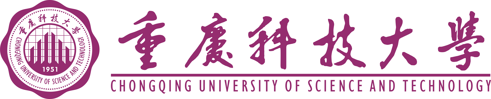

贴边收起，自然滑出
更新检测回到设置底部；更新简介支持安全 Markdown；贴边自动收起、悬停滑出、拖离解除，增加平滑动效和托盘恢复。
连接校园，让灵感不掉线。

安心专注，每一刻都在线。
校园服务，触手可及。
在系统浏览器中打开。标为“经信息门户”的服务，请登录门户后选择。
让连接按你的习惯运行。
登录 Windows 后启动，并隐藏到托盘
启动后使用最近保存的账号连接校园网
贴边收起，鼠标移到边缘滑出；拖离可解除
掉线后静默重连，不弹出下线提示
较长间隔可减少网络请求
亮暗渐变与弹性开关，可独立关闭
主页按钮可直接切换亮色或暗色
当前版本 5.1.1
从 GitHub Releases 检查正式版本。
在浏览器下载后安装；升级前请从托盘退出旧版。
关闭窗口会隐藏到系统托盘，检测和重连继续运行。
需要完全退出时，请使用托盘菜单。
只记录连接状态，不记录密码或认证参数。
暂无日志
5.1.1 · Tauri
让校园网络连接，简单一点。
更新检测回到设置底部；更新简介支持安全 Markdown；贴边自动收起、悬停滑出、拖离解除，增加平滑动效和托盘恢复。
浏览器内核补全认证跳转；切换账号保留同网络入口探测提示；修复重复密码眼睛；新增可开关的窗口边缘吸附、GitHub 更新检测与官网入口。
同网络重连重新探测已验证的认证入口；补充认证网址填入引导；滚动条自动隐藏、布局留白优化与个人主页入口。
修复验证码图片加载；支持会话内刷新、加载失败重试与验证码输入校验。
Tauri 2 与 Rust 后端；即时设置、融合标题栏、固定导航；姓名显示、退出登录与分时问候。
连接时长居中；更窄的窗口、主题渐变与弹性开关；修复手动断开后的直接重连。
Electron 界面与流畅动效；开机自启、系统托盘；5 秒 / 10 秒 / 2 分钟检测。
矢量图标、关于页面、更新日志与可调整的竖向窗口。
动态认证参数、密码转换、在线检测、自动重连与连接信息。
感谢 项目提供的锐捷认证脚本